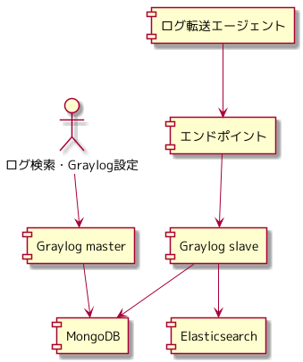
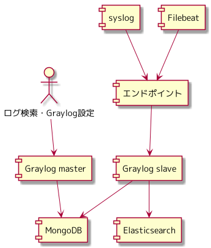

さくらインターネット Advent Calendar 2021 17日目の記事になります。
syslog を使ったログ管理について考察してみる にて、 syslog server にファイルでログを管理するという構成をとった場合に、どうなりそうかについて考えてみました。
「さくらの専用サーバ PHY」では、 syslog を使ったログ管理について考察してみる のようなログ管理はしておらず、 Graylog を使いログを管理していました。 Graylog でのログ管理を2年半ほど運用し、現在は Grafana Loki に切り替わっています。
今回は、2年半とてもお世話になった Graylog を使うと、 syslog を使ったログ管理について考察してみる と同じ観点で、 どのようなログ管理を実現できるのかについて書いていきます。
アーキテクチャ
Graylog は、単体で動くものではなく、 設定情報を MongoDB で管理し、 ログを Elasticsearch で管理するアーキテクチャとなっています。 Graylog は、ログ受信、ログ検索の Web UI を提供します。
https://docs.graylog.org/docs/architecture

Graylog
Graylog は master, slave の構成をとっています。 master にて Graylog を設定すると、設定情報は MongoDB に保存されます。 slave は MongoDB に保存された情報を参照し、動作します。
https://docs.graylog.org/docs/manual-setup
MongoDB
Graylog の設定や Elasticsearch のインデックスなどの情報が保存されています。 を構成します。
Graylog で利用する MongoDB の構成については、公式ドキュメントや他の記事にお任せします。
Replica Set というキーワードで検索してみるといろいろ出てくるはずです。
https://docs.graylog.org/docs/multinode-setup
Elasticsearch
Graylog が受信したログが保存されます。
Elasticsearch の構成については、公式ドキュメントや他の記事にお任せします。
プライマリシャード、レプリカシャードというキーワードで検索するといろいろ出てくるはずです。
https://docs.graylog.org/docs/multinode-setup
ログ転送
ログ転送エージェントには、 syslog と Filebeat を利用しました。

syslog
ネットワーク機器、アプライアンスなどのログを管理する必要があり、 これらは任意のログ転送エージェントをインストールできず、ログ転送は、 syslog のみとなります。 Graylog では、 syslog を受信できます。
https://docs.graylog.org/docs/syslog
Filebeat
fluentd にてログのファイルを読み込み、 Graylog に転送できないか調べてみましたが、標準の機能には無く、 Graylog のプロトコルである GELF を Output するサードパーティーのプラグインがありましたが、 それを利用し、「いざとなったらコードにダイブしてメンテナンスし続ける」 という気概を持てなかったので、他の手段を探してみることにしました。
Graylog は Beats プロトコルに対応しており、 Filebeat が利用できることがわかりました。 ログのファイルを読み込み、 Graylog に転送するという要件を満たしているため、採用しました。
https://docs.graylog.org/docs/beats
Graylog でのログ管理
syslog を使ったログ管理について考察してみる と同じ観点で、 Graylog でのログ管理を使うとどうなりそうかについて考えてみます。
ログ出力
アプリケーションは、ログをどこかにファイルで出力していれば、 Filebeat がファイルを拾い Graylog でログが管理できます。 アプリケーションにて syslog を使うという制約が無くなり、任意の場所にログを書き出せばよくなります。
冗長化
Graylog slave を複数台並べておけば、 Graylog slave が1台ダウンしたとしても、ログ受信を継続できます。
Elasticsearch は、複数台のクラスタを構成しており、 Elastcsearch のノードが1台ダウンしたとしてもログの保存を継続できます。
MongoDB は、複数台で Primary, Secondary を構成しており、 MongoDB が1台ダウンしたとしても、設定情報の読み込みや書き込みを継続できます。
Graylog は、 IaaS で運用していました。 仮想サーバーを収容しているホストのメンテナンスにより、 サーバーを停止・起動する必要がありましたが、上記の構成がとれていたことにより、 サーバーを停止したとしてもログ管理のサービスを継続できました。
ストレージ拡張
Elasticserach は、複数台のクラスタを構成しており、 Elastcsearch のノードが1台停止してもデータの保存や参照が停止しない仕組みとなっています。
Elasticsearch のノードを1台停止し、ストレージを拡張し、 Elasticsearch のクラスタに再投入するというオペレーションにより、 ログの保存・参照を停止することなくストレージの拡張が可能です。
ログ参照
Graylog にてログを検索するためのインタフェースが提供されています。 ログを検索するための仕組みを独自に作る必要はありません。
ログのローテート
Graylog にて設定した世代数ぶん Elasticsearch のインデックスを残すという設定があり、 それを設定しておけば、 Graylog がよしなにログをローテートします。 ログをローテートする仕組みを独自に作る必要はありません。
スケールアウト
ログの流量に合わせて、 Graylog slave でのログ受信をスケールさせたり、 Elasticsearch をスケールしながら、ログを管理していけそうです。
何がうれしいのか
ログの参照、ローテートの仕組みを作る必要が無く、 Graylog の各コンポーネントが1台停止したくらいで止まるような ログ管理のサービスにはならないのではないかということが見えてきます。